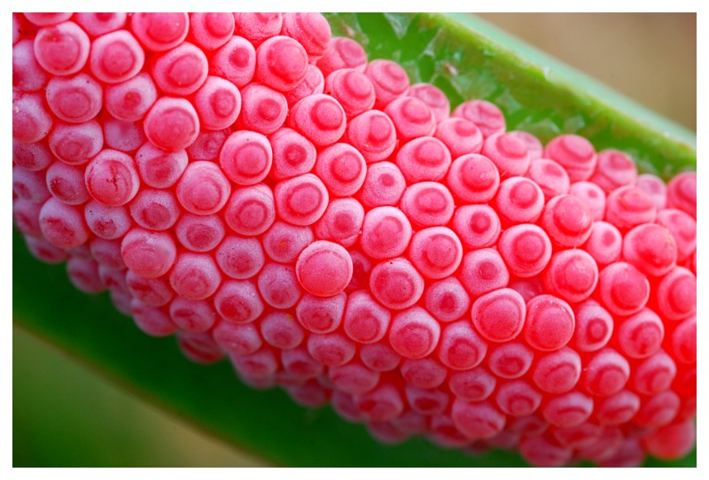

Content Area: Food, Culture, Science, Botany, Biological Diversity, Health, Economics
Standard: Life and Environmental Sciences: Biodiversity, genetics and evolution
- Objective: Explain how scientific advances and emerging technology have influenced the production of our food.
- Objective: Weigh the risks and benefits of technological solutions on our surrounding environment.
- Objective: Identify pests and diseases that threaten kalo.
- Objective: Study the benefits of organic pest and disease control.
Pests and disease cause great loss to farmers’ crops. Protection and security for our food crops are a constant challenge. Taro, Mauka To Makai, is a valuable resource from the UH College of Tropical Agriculture & Human Resources.
1. Define Food security: The World Health Organization, of the United Nations defined food security as existing 'when all people at all times have access to sufficient, safe, nutritious food to maintain a healthy and active life.' Food security is built on three pillars:
- Food availability
- Food access
- Food use
2. Research insects that affect kalo: Taro root aphid, mealybugs, taro delphacid, slugs, apple snails. See the book Taro, Mauka To Makai.

Photo of Taro Delphacid, Tarophagus colocasiae. Credit Weston Yap

Photo of apple snail eggs, Pomacea canaliculata. Credit Foozi Saad at Pt.treknature.com

Photo of apple snail eggs on kalo in Hanalei, Kaua‘i. Credit Weston Yap
3. Look at diseases that affect kalo in Taro, Mauka To Makai:
- Phytophthora blight spoils the leaf.
- Pythium rot sickens the corm.
4. Research what the fertilizer elements of Nitrogen, Phosphorus and Potassium do for kalo. See this CTAHR publication Nutrient Deficiencies and Excesses in Taro. Link to CTAHR.hawaii.edu.
- Nitrogen (N): Encourages stem & leaf growth.
- Phosphorus (P): Promotes root develpment.
- Potassium (K): Stimulates starch production to produce solid corms.
5. Research pesticides and herbicides for sale at Lowe's Home Improvement, or The Home Depot. Look at the ingredients. Dig deeper to find out what are those ingredients?
Glyphosate is an example of an herbicide ingredient widely used in the U.S., including in some kalo farms, to kill weeds. Wikipedia states Glyphosate kills plants by interfering with the synthesis of the amino acids phenylalanine, tyrosine and tryptophan.
Glyphosate may cause abnormalities in aquatic life. It may be toxic to humans.
6. For further understanding of pesticides and herbicides, view this CTAHR publication Pesticides Currently registered for Use in Taro in Hawai’i, to understand what chemicals are available, how they are used, and the risks involved in their use.
7. The Hawaii Poison Hotline 1-800-222-1222. The hotline connects you directly to specially trained pharmacists and nurses to help manage poison exposure and answer poison related questions. It is accessible from anywhere within the United States and operates 24-hours-a-day, 7-days-a-week with free, confidential services.
8. View this video, DDT and Pesticides. min. 2:55. By ha9981. Link to Youtube.com. DDT (Dichlorodiphenyltrichloroethane) is now banned from use. The video is from the documentary The Corporation. Dr. Samuel Epstein, Professor of Occupational and Environmental Medicine describes DDT's effects. It was effective at fighting mosquitoes that carried malaria, but toxic to birds and humans. Discuss mistakes made in the past, and the unintended effects on the environment and people.
9. Experts have different views on how to protect our food. View this commercial, Monsanto's Genuity, min. 3:25. By Monsanto Co. Link to Youtube.com. The commercial presents the view that plants can be built stronger by changing genetic traits. Discuss if this ad's view is compatible with the traditional Hawaiian practice of raising many varieties of kalo.
10. View this video of farmers in India, Dekalb Corn Commercial, min. 1:09. By Monsanto Co. Link to Youtube.com. Dekalb is a seed brand that is part of Monsanto Co. Discuss how the introduction of genetically modified crops, such as corn, to a foreign country like India might affect India’s own native varieties.
11. View this video, Monsanto’s Sustainability Commitments, min. 3:55. By Monsanto Co. Link to Youtube.com. Discuss presenter Michael Doane’s view of technology and genetic modification of plants as tools of food sustainability.
Defining sustainability. Discuss if his approach, which focuses on using technology to increase food production, is compatible with the traditional Hawaiian practice of raising many varieties of kalo to protect food sustainability.
12. As an opposing view to industrial farming, view this video, Food Inc. Official Trailer, min. 2:16. By Food Inc. Link to Youtube.com. Examine the film narrator’s objections to the way food is supplied in the market today.
13. The mighty ducks. In Taiwan, a farmer returned to the tradition of raising ducklings to control pests and weeds. View this video, Duck Field Rice organic farm in Miaoli. 4:06 min. By Tzuchisg. Link to Youtube.com. Discuss how ducklings assist in controlling pests and weeds on a rice farm.

Credit: image from Duck Field Rice organic farm in Miaoli posted on Youtube.com.
14. View this video about the Svalbard Global Seed Vault in Norway, Doomsday Vault Protects World’s Seeds on 60 Minutes. min. 3:25. By CBS News. Link to Youtube.com. Discuss this vault as a strategy to protect Earth’s food supply.